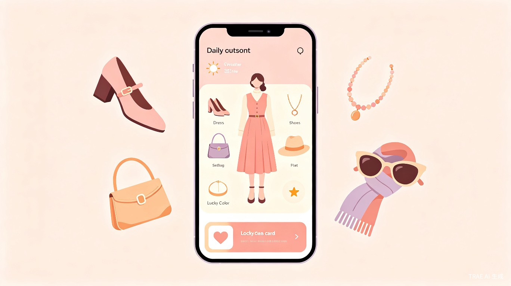
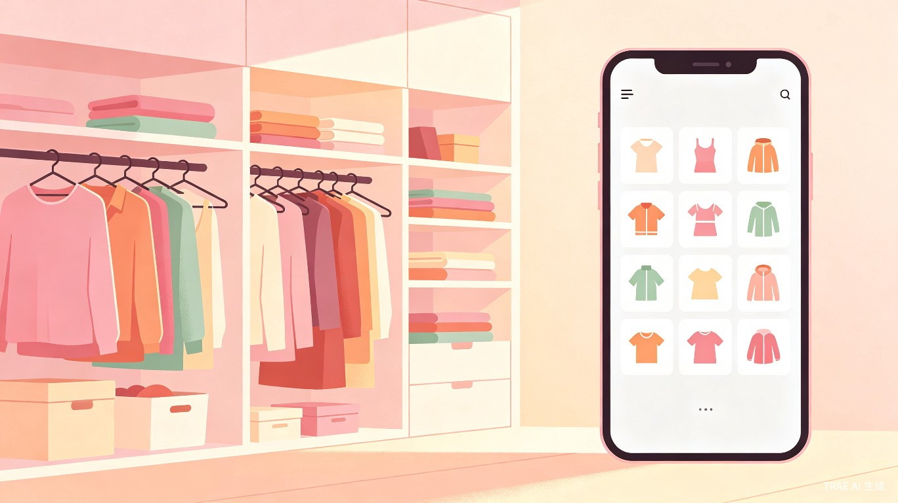

想解决什么问题
每天早上站在衣柜前发呆，不知道今天穿什么——这是很多女生的日常困扰。不是没有衣服，而是不知道怎么搭配、不知道今天穿什么颜色合适、不知道外面天气适合什么厚度。再加上鞋子、首饰、帽子、包包，全身搭配就更让人头疼了。
"懒"不是懒，是每天早上站在衣柜前不知道穿什么的纠结——这种幸福的烦恼，我来帮你解决。
为什么会想到做这个
想给老婆做一份每日穿衣指南，从"老公视角"出发，把关心变成一个实用工具。名字叫"懒婆娘"不是贬义，而是调侃她每天早上选衣服时的纠结。这个工具不只是冰冷的推荐算法，更是一份来自另一半的日常关心。
产品形态
初赛阶段以 响应式 Web 应用（手机优先设计）快速出 Demo，复赛阶段计划迁移至微信小程序，贴合目标用户的使用习惯。
面向哪些用户
主要面向 20-40 岁女性，尤其是每天需要为穿搭发愁、希望穿得好看得体但不想花太多时间思考的女生。产品由老公为老婆打造，但日常使用者是女生本人。
早上出门前
打开看今天的穿搭推荐，一分钟搞定全身搭配
换季时节
不知道该翻出哪些衣服，换季专题帮你过渡
特殊场合
约会、出差、纪念日，场景化穿搭推荐
日常好奇
今天穿什么颜色运气更好？黄历星座告诉你
当前痛点
- 天气忽冷忽热，不知道穿多穿少
- 衣服很多但不会搭配，经常只穿那几套
- 不了解什么颜色适合自己，买了又后悔
- 鞋子、首饰、帽子、包包跟衣服搭不上
- 每天花在选衣服上的时间太多
功能规划

- 每日穿搭推荐 — 优先从用户衣橱匹配，衣橱中没有的单品 AI 生成推荐并附带购买链接 P0
- 全身搭配 — 衣服、鞋子、首饰、帽子、包包、妆容色系一站式推荐 P0
- 个人档案 — 体型、肤色、风格偏好、星座，打造个性化推荐 P0
- 衣橱管理 — 拍照上传衣服，AI 自动分类（上衣/下装/连衣裙/外套），作为推荐的基础数据 P0
- 老公留言 — 每日搭配附带一句关心的话（初赛使用 AI 预设留言库，复赛支持老公自定义填写） P0
- 特殊日子提醒 — 录入纪念日/生日，主页显示倒计时，特殊日子自动推荐浪漫穿搭，生成提醒卡片分享给老公 P0
- 穿搭展示 — 用户上传照片，AI 生成专属个性化虚拟形象，用"自己"展示每日穿搭效果 P1
- 穿搭历史 — 记录每日穿搭，形成"我们的风格日记" P1
- 搭配评分与灵感图板 — 给搭配打分，收藏喜欢的搭配灵感 P2
- AI 虚拟试穿 — 将推荐衣服直接合成到用户照片上，看到真实穿着效果 P2
为什么不一样

衣橱优先推荐
先从用户真实衣橱中匹配搭配，衣橱里缺的单品再 AI 生成推荐并附带京东等平台购买链接
黄历 + 星座
黄历 API 获取每日宜忌幸运色，AI 生成结合穿搭场景的星座运势文案，让穿搭有"好运加持"
全身搭配
覆盖衣服、鞋子、首饰、帽子、包包、妆容，不是只推荐一件上衣就结束
特殊日子提醒
录入纪念日/生日，自动倒计时 + 浪漫穿搭推荐 + 生成提醒卡片分享给老公，帮他记住每一个重要日子
老公视角的温度
每日 AI 关心留言、风格日记、惊喜模式——来自另一半的关心，不是冷冰冰的算法
专属虚拟形象
用户上传照片，AI 生成保留个人特征的专属插画模特，用"自己"看穿搭效果
这个创意的价值
效率提升
把每天选衣服的时间从 15 分钟缩短到 1 分钟，天气、黄历、星座、偏好全部考虑进去
情感温度
不只是一个穿搭工具，更是一份来自另一半的关心，让选衣服这件小事变得有温度
关系经营
录入纪念日和生日，到时间自动推荐浪漫穿搭并生成提醒卡片分享给老公——帮他记住每一个重要日子
实现路径
借助 TRAE Work 一站式完成创意梳理、项目搭建和应用开发，充分发挥 AI 辅助编程的优势。
数据来源
天气数据通过免费天气 API 获取；黄历宜忌和幸运色通过黄历 API 获取（固定历法数据，准确可靠）；星座运势由 AI 大模型结合日期、天气和穿搭场景实时生成（可定制、更有趣）。
开发计划
初赛阶段（6 月 - 7 月 15 日）
完成核心功能 Demo：个人档案设置、衣橱管理（拍照上传 + AI 分类）、每日穿搭推荐（衣橱优先 + AI 补充 + 购买链接）、全身搭配展示、老公留言（预设库）、特殊日子提醒（倒计时 + 分享卡片）
复赛阶段（7 月 21 日 - 8 月 9 日）
完善为完整产品：穿搭展示（专属虚拟形象）、穿搭历史、搭配评分、AI 虚拟试穿、老公自定义留言、短信/微信推送提醒
决赛阶段（8 月 21 日 - 22 日）
产品打磨、路演准备，考虑迁移至微信小程序